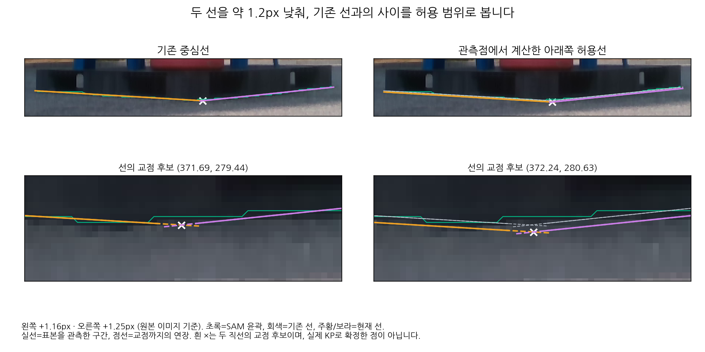

두 선에 아래쪽 여유를 주었습니다
이 사진에서는 약 1px 낮춘 선이 영상 경계를 더 잘 따라갑니다. 기본 화면은 관측점에서 계산한 왼쪽 +1.16px / 오른쪽 +1.25px의 아래쪽 허용선입니다.
주황=왼쪽 선 · 보라=오른쪽 선 · 회색=기존 선 · 초록=SAM 윤곽. 옅은 띠는 기존 선부터 현재 선까지의 이동 범위입니다. 실선은 관측 구간, 점선은 교점까지의 연장입니다. 흰 ×는 교점 후보입니다.
| 선 위치 | 왼쪽 | 오른쪽 |
|---|---|---|
| 기존 선 | 97% | 81% |
| 1px 아래 | 98% | 100% |
| 관측점의 아래쪽 허용선 | 98% | 100% |
| 2px 아래 | 84% | 73% |
비율은 동일한 표본 위치에서 영상과 마스크의 경계 기준을 모두 통과한 비율입니다. KP의 정답률은 아닙니다. 왼쪽 147개·오른쪽 118개 표본으로 비교했습니다.
따라서 이번 예시에서는 기존 선과 약 1.2px 낮춘 선 사이를 허용 띠로 보는 것이 적절합니다. 2px까지 내리면 경계를 지지하는 표본이 줄어듭니다. 선을 내려도 두 선의 각도는 같아서, 교점의 좌우 위치가 민감한 문제는 남습니다.
이번 변경은 선과 허용 범위의 표시입니다. 실제 KP나 자세를 새로 확정하지 않았으며 U 상태는 유지합니다. 표시하신 점·원래 KP3·정답 주석은 이동량 계산에 사용하지 않았습니다.
고정된 비교 이미지
